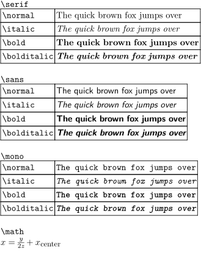
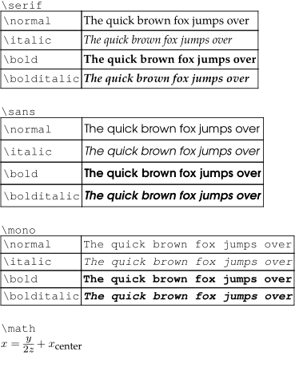

Contents
3 steps
Define a new font family with a first style
With \definefontfamily, give a name to the set of fonts you want to use and indicate a first font.
-
- Let's start with a Serif font, for which TeX practice is to refer to them as rm for Roman
\definefontfamily[MyFontIdentifier][rm][familynameoftheseriffont]
-
-
!!! WARNING !!!,
, it's not the
typescript name
that we have to use, nor the
fontname
, nor the
filename
. We have to use the
family name
of the font
- see under each preview in the overview table
-
or use
mtxrun --script font --list --file -pattern=*typescriptname*likemtxrun --script font --list --file -pattern=*pagella*
-
!!! WARNING !!!,
, it's not the
typescript name
that we have to use, nor the
fontname
, nor the
filename
. We have to use the
family name
of the font
Complete the family with other styles
For the other fonts, just continue to add them to your font family.
-
- ss for Sans Serif, tt for TypewriTer, mm for MatheMatics.
\definefontfamily[MyFontIdentifier][ss][familynameofthesansseriffont] \definefontfamily[MyFontIdentifier][tt][familynameofthemonospacedfont] \definefontfamily[MyFontIdentifier][mm][familynameofthemathfont]
-
- As you see, a limit here is that in TeX practice, we only have one roman, one sans serif... per font family.
- in order to use more fonts, like width variation ("condensed",...), and weight variation ("light",...), we have to define other font family (MyFontIdentifier-condensed, MyFontIdentifier-light), and to switch between them along the document, with \switchtobodyfont .
Set up your document to use the new font family
Declare your font family as the default for your document with \setupbodyfont, as you would do for a typescript.
\setupbodyfont[MyFontIdentifier]
Example
-
This basic input is typeset with the default font, Latin Modern:
-
\setupbodyfont[7pt] \startbuffer[line] The quick brown fox jumps over \stopbuffer \startbuffer[sample] \startTABLE \NC \type{\normal} \NC \normal{\getbuffer[line]} \NC \NR \NC \type{\italic} \NC \italic{\getbuffer[line]} \NC \NR \NC \type{\bold} \NC \bold{\getbuffer[line]} \NC \NR \NC \type{\bolditalic} \NC \bolditalic{\getbuffer[line]} \NC \NR \stopTABLE \stopbuffer \startlines \type{\serif} \serif{\getbuffer[sample]} \type{\sans} \sans{\getbuffer[sample]} \type{\mono} \mono{\getbuffer[sample]} \type{\math} \math{x = \frac{y}{2z} + x_{\text{center}}} \stoplines
- 
-
-
And let's view the difference with our new set of fonts:
-
\definefontfamily [MyFontIdentifier] [rm] [texgyrepagella] \definefontfamily [MyFontIdentifier] [ss] [texgyreadventor] \definefontfamily [MyFontIdentifier] [tt] [texgyrecursor] \definefontfamily [MyFontIdentifier] [mm] [stixtwomath] \setupbodyfont[MyFontIdentifier, 7pt] \startbuffer[line] The quick brown fox jumps over \stopbuffer \startbuffer[sample] \startTABLE \NC \type{\normal} \NC \normal{\getbuffer[line]} \NC \NR \NC \type{\italic} \NC \italic{\getbuffer[line]} \NC \NR \NC \type{\bold} \NC \bold{\getbuffer[line]} \NC \NR \NC \type{\bolditalic} \NC \bolditalic{\getbuffer[line]} \NC \NR \stopTABLE \stopbuffer \startlines \type{\serif} \serif{\getbuffer[sample]} \type{\sans} \sans{\getbuffer[sample]} \type{\mono} \mono{\getbuffer[sample]} \type{\math} \math{x = \frac{y}{2z} + x_{\text{center}}} \stoplines
- 
-
Set up a font family with optical size options
A few fonts like Computer Modern are available with optical sizes.
This guide should help to use fonts from Adobe with optical sizes.
Replacements
Adobe provides four different sizes for their fonts, but not each
of them comes with every style like Bold or Italic, replacements
for these missing styles are defined in the font:optical:...
setups.
\startsetups [font:optical:serif] \definefontsynonym [SerifCaption-Regular] [SerifRegular-Regular] \definefontsynonym [SerifCaption-Bold] [SerifCaption-Regular] \definefontsynonym [SerifCaption-Italic] [SerifCaption-Regular] \definefontsynonym [SerifCaption-Slanted] [SerifCaption-Italic] \definefontsynonym [SerifCaption-BoldItalic] [SerifCaption-Regular] \definefontsynonym [SerifCaption-BoldSlanted] [SerifCaption-BoldItalic] \definefontsynonym [SerifCaption-Caps] [SerifCaption-Regular] \definefontsynonym [SerifRegular-Regular] [DefaultFont] \definefontsynonym [SerifRegular-Bold] [SerifRegular-Regular] \definefontsynonym [SerifRegular-Italic] [SerifRegular-Regular] \definefontsynonym [SerifRegular-Slanted] [SerifRegular-Italic] \definefontsynonym [SerifRegular-BoldItalic] [SerifRegular-Regular] \definefontsynonym [SerifRegular-BoldSlanted] [SerifRegular-BoldItalic] \definefontsynonym [SerifRegular-Caps] [SerifRegular-Regular] \definefontsynonym [SerifSubhead-Regular] [SerifRegular-Regular] \definefontsynonym [SerifSubhead-Bold] [SerifSubhead-Regular] \definefontsynonym [SerifSubhead-Italic] [SerifSubhead-Regular] \definefontsynonym [SerifSubhead-Slanted] [SerifSubhead-Italic] \definefontsynonym [SerifSubhead-BoldItalic] [SerifSubhead-Regular] \definefontsynonym [SerifSubhead-BoldSlanted] [SerifSubhead-BoldItalic] \definefontsynonym [SerifSubhead-Caps] [SerifSubhead-Regular] \definefontsynonym [SerifDisplay-Regular] [SerifRegular-Regular] \definefontsynonym [SerifDisplay-Bold] [SerifDisplay-Regular] \definefontsynonym [SerifDisplay-Italic] [SerifDisplay-Regular] \definefontsynonym [SerifDisplay-Slanted] [SerifDisplay-Italic] \definefontsynonym [SerifDisplay-BoldItalic] [SerifDisplay-Regular] \definefontsynonym [SerifDisplay-BoldSlanted] [SerifDisplay-BoldItalic] \definefontsynonym [SerifDisplay-Caps] [SerifDisplay-Regular] \stopsetups
Font assignments
Each of the four sizes is designed for a specific size, e.g. Caption is suitable between 4pt and 8pt, the Regular size between 9pt and 12pt ...
\starttypescript [serif] [optical] [size] \definebodyfont [4pt,5pt,6pt,7pt,8pt] [rm] [tf=SerifCaption-Regular sa 1, bf=SerifCaption-Bold sa 1, it=SerifCaption-Italic sa 1, sl=SerifCaption-Slanted sa 1, bi=SerifCaption-BoldItalic sa 1, bs=SerifCaption-BoldSlanted sa 1, sc=SerifCaption-Caps sa 1] \definebodyfont [9pt,10pt,11pt,12pt] [rm] [tf=SerifRegular-Regular sa 1, bf=SerifRegular-Bold sa 1, it=SerifRegular-Italic sa 1, sl=SerifRegular-Slanted sa 1, bi=SerifRegular-BoldItalic sa 1, bs=SerifRegular-BoldSlanted sa 1, sc=SerifRegular-Caps sa 1] \definebodyfont [14.4pt,17.3pt] [rm] [tf=SerifSubhead-Regular sa 1, bf=SerifSubhead-Bold sa 1, it=SerifSubhead-Italic sa 1, sl=SerifSubhead-Slanted sa 1, bi=SerifSubhead-BoldItalic sa 1, bs=SerifSubhead-BoldSlanted sa 1, sc=SerifSubhead-Caps sa 1] \definebodyfont [20.7pt] [rm] [tf=SerifDisplay-Regular sa 1, bf=SerifDisplay-Bold sa 1, it=SerifDisplay-Italic sa 1, sl=SerifDisplay-Slanted sa 1, bi=SerifDisplay-BoldItalic sa 1, bs=SerifDisplay-BoldSlanted sa 1, sc=SerifDisplay-Caps sa 1] \stoptypescript
Typescripts
To use the font in our document, the symbolic font names used in the font assignments section above need to be mapped to actual font files.
\starttypescript [serif] [minion-pro] \definefontsynonym [Serif] [SerifRegular-Regular] \definefontsynonym [SerifBold] [SerifRegular-Bold] \definefontsynonym [SerifItalic] [SerifRegular-Italic] \definefontsynonym [SerifBoldItalic] [SerifRegular-BoldItalic] \stoptypescript \starttypescript [serif] [minion-pro] \setups[font:optical:serif] \definefontsynonym [SerifCaption-Regular] [file:MinionPro-Capt] [features=default] \definefontsynonym [SerifCaption-Bold] [file:MinionPro-BoldCapt] [features=default] \definefontsynonym [SerifCaption-Italic] [file:MinionPro-ItCapt] [features=default] \definefontsynonym [SerifCaption-BoldItalic] [file:MinionPro-BoldItCapt] [features=default] \definefontsynonym [SerifRegular-Regular] [file:MinionPro-Regular] [features=default] \definefontsynonym [SerifRegular-Bold] [file:MinionPro-Bold] [features=default] \definefontsynonym [SerifRegular-Italic] [file:MinionPro-It] [features=default] \definefontsynonym [SerifRegular-BoldItalic] [file:MinionPro-BoldIt] [features=default] \definefontsynonym [SerifSubhead-Regular] [file:MinionPro-Subh] [features=default] \definefontsynonym [SerifSubhead-Bold] [file:MinionPro-BoldSubh] [features=default] \definefontsynonym [SerifSubhead-Italic] [file:MinionPro-ItSubh] [features=default] \definefontsynonym [SerifSubhead-BoldItalic] [file:MinionPro-BoldItSubh] [features=default] \definefontsynonym [SerifDisplay-Regular] [file:MinionPro-Disp] [features=default] \definefontsynonym [SerifDisplay-Bold] [file:MinionPro-BoldDisp] [features=default] \definefontsynonym [SerifDisplay-Italic] [file:MinionPro-ItDisp] [features=default] \definefontsynonym [SerifDisplay-BoldItalic] [file:MinionPro-BoldItDisp] [features=default] \stoptypescript
Typeface
In the final step is to define a typeface where the normal size values are replaced with the size ranges.
\starttypescript [minion-pro] \definetypeface [minion-pro] [rm] [serif] [minion-pro] [optical] \stoptypescript